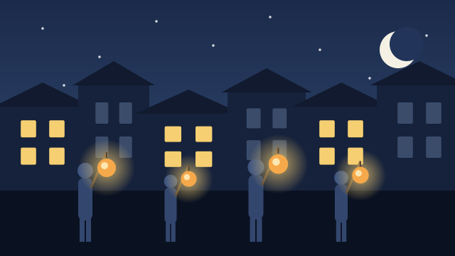
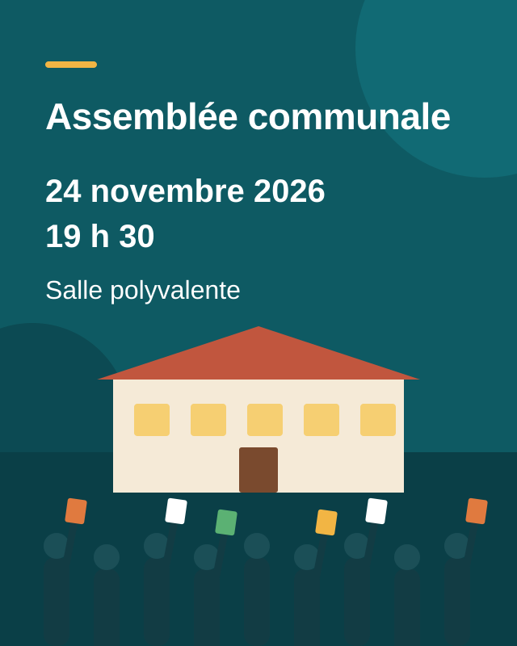

Nouveaux horaires des guichets dès le 1er novembre
L’administration communale sera désormais ouverte le jeudi soir jusqu’à 18 h 30. En contrepartie, le guichet sera fermé le mercredi après-midi.
Une commune vivante entre la forêt de l’Aarenwald et le bord du lac – et en ligne pour vous, jour et nuit.
L’administration communale sera désormais ouverte le jeudi soir jusqu’à 18 h 30. En contrepartie, le guichet sera fermé le mercredi après-midi.

Dès novembre, les déchets verts ne seront plus ramassés que toutes les deux semaines. Merci de tenir compte des nouvelles dates.

Plus de 40 stands de produits régionaux, d’artisanat et de soupe à la courge, avec la fanfare du village.

Les enfants de l’école enfantine défilent dans le village avec leurs lanternes de raves. Départ à 18 h devant l’école de Moosmatt.
Carte d’identité, attestation de domicile ou marque pour chien : l’administration communale est votre premier interlocuteur. De nombreuses prestations sont disponibles jour et nuit au guichet en ligne ; les nouveaux horaires d’ouverture de nos guichets s’appliquent dès le 1er novembre 2026.
Toutes les dates de ramassage des déchets verts figurent dans le calendrier des déchets – plus.
Toutes les dates de collecte des ordures, des déchets verts, du papier et du carton en un coup d’œil.
Administration communale de Musterwil
Dorfstrasse 1, 9999 Musterwil
Téléphone 032 000 12 34
gemeinde@musterwil.example
Samedi, de 9 h à 16 h. Le traditionnel Musterwiler Märit propose des produits régionaux et de l’artisanat ; à 11 h, le Conseil communal offre l’apéritif.
Mercredi, 18 h, départ devant l’école de Moosmatt. L’association des parents offre ensuite du punch chaud.
Mardi, 19 h 30, salle polyvalente. Ordre du jour : budget 2027 et assainissement de l’école de Moosmatt.
Vendredi, 17 h, bibliothèque communale, Bahnhofstrasse 12. Pour les enfants de 4 à 8 ans, entrée libre.

Source : Office fédéral de la statistique (OFS), état au 31 décembre 2025.